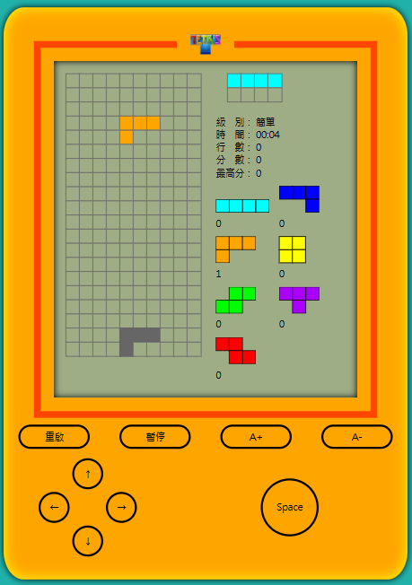

自我介紹
我是傅永傑，具備 Laravel、Golang、Node.js 等後端技術，曾參與多項系統開發與效能強化。也是國際技能競賽代表選手，榮獲 WorldSkills Asia 銀牌與WorldSkills Lyon 優勝獎項。
技能總覽
- 軟體開發：Laravel / Node.js / Golang / C# / JavaScript
- 資料庫：MySQL / MSSQL
- 工具與試算：Git / RESTful API / E2E 測試 / Electron
- 前端框架：Vue.js / Ant Design
作品
- 獨立開發以太空為主題的2D射擊遊戲，玩家可操控太空船閃避隕石並擊敗敵人。
- 具備分數統計、音效、動畫特效與多種關卡設計。
- 遊戲主邏輯、碰撞偵測、分數計算皆由純前端技術實現。
- 音效與動畫同步，提升遊戲沉浸感。
- 介面設計美觀，並支援多種解析度。
- 圖片與音效資源皆進行優化，確保載入速度與效能。
- 具備暫停、音效開關等完整遊戲功能。
- 設計並開發完整線上點餐平台，支援多店家、菜單管理、訂單流程與即時通知。
- 前端採用 Vue.js，後端以 Node.js + MySQL 架構，實現 RESTful API 串接。
- 整合第三方金流與 QR Code 點餐，提升用戶便利性。
- 負責 UI/UX 設計，確保手機、平板、桌機皆有良好體驗。
- 開發即時對戰五子棋遊戲，支援玩家配對、觀戰與聊天功能。
- 後端以 Node.js + WebSocket 處理即時連線，前端採用 Vue.js 呈現棋盤互動。
- 設計遊戲規則判斷與勝負判定演算法。
- 實作房間管理與遊戲歷程記錄，提升用戶體驗。
- 設計並開發活動訂票系統，支援座位選擇、票種設定、線上付款與 QR Code 驗票。
- 後端採用 Laravel，實現多角色權限控管與訂單管理。
- 串接第三方金流與 Email 通知，提升自動化程度。
- 撰寫 API 文件，方便前端與第三方系統整合。
- 設計並開發圖書館管理 API，支援書籍查詢、借閱、歸還與逾期管理。
- 採用 Laravel 架構，資料庫使用 MySQL。
- 實作 JWT 驗證機制，確保 API 安全性。
- 撰寫 Swagger 文件，方便前端與第三方系統串接。
- 開發一套基於 PHP 與前端技術的多媒體相簿管理系統，實現用戶登入、相簿瀏覽、影片播放等功能。
- 用戶登入驗證與權限管理。
- 相簿與影片列表瀏覽，支援影片播放與全螢幕切換。
- 音訊控制（開啟/關閉音效）。
- 使用 Bootstrap 實現響應式網頁設計。
- 前端互動採用 Vue.js 與 jQuery。
- 後端以 PHP 開發，XAMPP 本地伺服器環境。
- 獨立設計並實作前後端功能，撰寫前端互動邏輯與 UI 設計，整合多媒體播放與用戶體驗優化。
- 以 HTML、CSS、JavaScript 製作經典俄羅斯方塊遊戲，畫面仿照懷舊遊戲機外觀設計，提升趣味性與視覺吸引力。
- 前端使用 jQuery 處理遊戲邏輯、方塊移動與碰撞判斷，並實現即時分數顯示。
- 運用 SVG 與多張圖片資源，精心還原遊戲機造型與按鈕互動效果。
- 後端以 PHP 實作會員註冊、分數上傳與排行榜功能，支援多位玩家競賽。
- 熟悉前後端整合、AJAX 非同步資料傳輸與網頁互動設計。

專案經歷
- 負責企業形象網站前端切版與互動設計，提升品牌專業形象。
- 採用 Vue.js 與現代化前端技術，實現響應式設計與跨瀏覽器相容。
- 與設計師、後端工程師協作，確保專案如期交付。
- 開發自動化貼文、排程與數據收集工具，協助社群小編提升工作效率。
- 串接 Facebook/Instagram API，實現自動發文、留言與互動統計。
- 設計彈性化設定介面，方便行銷團隊自訂內容與排程。
- 設計並開發完整論壇系統，支援發文、留言、用戶管理與權限控管。
- 前端採用 Vue.js，後端以 Laravel + MySQL 架構，實現 RESTful API 串接。
- 優化資料庫查詢與快取機制，提升系統效能與穩定性。
- 使用 Vue.js 開發 SPA 前端，實現積木拖拉、即時程式碼產生與預覽功能。
- 整合 Blockly 與 Ardublockly，支援 Arduino 程式積木化編輯與一鍵上傳。
- 跨平台打包（Windows/Linux），整合 Electron 技術，方便安裝與部署。
- 客製化 Blockly 積木與教學範例，支援多種感測器與硬體模組。
- 前後端模組化設計，易於擴充與維護。
- 撰寫自動化測試（單元測試、E2E 測試），確保系統穩定性。
- 整合多國語系（i18n），提升國際化應用潛力。
- 撰寫詳細使用者文件與教學資源，協助教師與學生快速上手。
- 使用 C# WinForms 開發，實作完整麻將遊戲發牌流程與玩家資料結構。
- 設計並實現多種牌型判斷與胡牌分析演算法，提升遊戲決策輔助能力。
- 開發視窗化操作介面，方便使用者進行發牌、查詢與測試。
- 支援自訂遊戲規則與參數設定，提升工具彈性與適用性。
- 熟悉物件導向設計、事件驅動程式設計與 UI/UX 基本原則。
- 以 Golang 為主體，整合並呼叫 C++ DLL 執行麻將遊戲核心邏輯。
- 實作房間管理、遊戲規則設定與 AI 決策模組。
- 專案高度模組化，方便擴充與維護。
- 程式碼具繁體中文註解，強化團隊協作。
- 以 Vue.js 開發即時聊天室平台，支援多房間、主持人管理、語音錄音、預約包廂等功能。
- 整合 WebSocket 實現即時訊息與語音互動，提升用戶溝通效率。
- 與後端 API 串接，實現用戶認證、房間管理、用戶資料維護等功能。
- 採用模組化元件設計，提升程式碼可維護性與擴展性。
- 負責 UI/UX 設計，確保跨裝置、跨瀏覽器相容性。
競賽經歷
- WorldSkills Asia 2023 - 銀牌
- WorldSkills Lyon 2024 - 優勝獎項